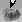
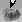
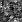
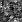
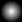

Geomorph - FAQ
PRINCIPLES
OUTPUT
FILES (PNG)
THE
PREVIEW DIALOG
INTERFACE
PERFORMANCE,
MEMORY,
STABILITY
RENDERER (POVRAY)
PRINCIPLES
What is the
difference between the subdivision 1 and the subdivision 2?
The subdivision principle is explained in the introduction.
Subdivision 1  uses the "exclusive or" (NOR)
instead of add
and subtract for moving the altitude of the points on the surface
(making "hills" and
"holes"). while subdivision 2
uses the "exclusive or" (NOR)
instead of add
and subtract for moving the altitude of the points on the surface
(making "hills" and
"holes"). while subdivision 2  uses add and subtract. Subdivision
1 is a lot
faster because the "NOR" doesn't involve managing the overflows (over
65535) or the underflows (under 0). Because it's faster, it is the
process used by the default height field pen.
uses add and subtract. Subdivision
1 is a lot
faster because the "NOR" doesn't involve managing the overflows (over
65535) or the underflows (under 0). Because it's faster, it is the
process used by the default height field pen.
Subdivision 1 height fields seem more rough, like if they were
stratified with a lot of noise. Sometimes they look more insteresting
than subidivision 2 height fields.
Subdivision 1, however, gives less control over the result than
subidivision 2. Subdivision 2 provides parameters to control the
distribution of the hills and holes, so that they are not too regularly
scattered
on the ground plane. It is also possible to control the amplitude of
wave lengths composing the heightfield. A 0 ampiltude means that the
corresponding frequency is removed. For instance, removing high
frequencies (wavelength of 2, 4 and 8 pixels) is roughly equivalent to
smoothing the image with a radius of 8 pixels by using the toolbox.
What is the use of the
"seed"?
The "seed" is a number used as a
starting point for the
pseudo-random number generator of the system.
Geomorph frequently requires random values, for instance when it
displaces the height of a point in the subdivision generation
processes, when it displaces a bump on the ground in the surface sum
generation process, or for creating noise.
Without these random displacements, it wouldn't be possible to create
realistic height fields. If you want an example, set the
"XY displacement" parameter to 0 in the progressive sum of surfaces
options subdialog

Giving a random seed, written in the "geomorphrc" configuration file,
allows to reproduce the results at will (this is why it's
pseudo-random, not truly random). When you start Geomorph, or when you
type a given number as seed, you should always get the same results.
OUTPUT
FILES (PNG)
Why did you choose the
PNG format for Geomorph?
A high quality height field requires values stored on 16
bits for each pixel, which means 65536 shades or altitude levels. Most
images have 8 bits for each color (or channel), which means 256 shades.
Height fields are monochrome, so using a 8 bits image format for
storing them means a reduced scale of 256 altitude levels. This can
give
a stair effect on rendered landscapes.
PNG is one of the few format managing 16 bits per channel. It is
recognized by many programs, including Povray, naturally. It offers a
lossless compression. It allows to store comments and arbitrary
parameters
beside the image. For instance, Geomorph write in its PNG images if
they
are "tileable" (if they wrap) or not, and the cameras parameters used
in
the preview dialog. And last but not least, it was created as a
royalty-free
open standard, which should avoid situations like the one which
happened
with the GIF format a few years ago.
How can I
import external images into Geomorph?
You should use a software which recognizes the file format
of the external image, can scale it to a suitable size and can save PNG
files.
Geomorph reads 128, 256, 512, 1024, 2048 or 4096 pixels wide square
images. It doesn't scale or crop images. However, it converts RGB to
greyscale images, and 8 bits (256 shades) greyscale images to 16 bits
images (65536 shades).
The Gimp is a good choice to scale or crop most 8 bits / channel
images, RGB or greyscale, and save it in the PNG 8 bits / channel
format
that Geomorph can read.
Using the "smooth"  tool with a small radius in
Geomorph would blur the
apparent stratification of a newly converted 256 shades image to
a 65536-shade image. Use the "noise"  tool to add high frequencies, for
a more natural look.
tool with a small radius in
Geomorph would blur the
apparent stratification of a newly converted 256 shades image to
a 65536-shade image. Use the "noise"  tool to add high frequencies, for
a more natural look.
How can I edit
65536-shade images created by Geomorph without losing the shades?
Geomorph does probably not fulfil all
the requirements of
height field editing. Maybe you'll want to use another editing tool.
The Gimp v. 1.x and 2.x reads Geomorph images, but reduces their tonal
range
from 65536 shades to 256 shades (16 bits to 8 bits).
You can try Filmgimp (now Cinepaint - see
cinepaint.sourceforge.net),
a branch from an older version of The Gimp (1.0.4). It is adapted for
film
editing, but reads and writes PNG 16 bits file format. I didn't play
with
it a lot, though.
I don't know any other free program which edits images with 16 bits per
channel.
The 3D preview
disappears sometimes. What can be done?
This problem seems to be related to
KDE. So far, it has not be seen under Gnome. I don't know the source.
The solution for now is to click on the "Refresh" button of the preview.
The
preview dialog is not displayed at all when starting Geomorph, and
there is a message saying that OpenGL is not available. Is it normal?
This has been observed in 2 situations:
1. Geomorph 0.30 is used with a recent Nvidia card and the proprietary
driver. The solution is to update Geomorph to version 0.31 or later.
Version 0.31 and later use the libgtkglext library instead of
libgtkglarea, which fixes the problem.
2. Maybe the "glx" module (the 3D layer) is not loaded by the X-Windows
system. Check if "glx" is specified in the "Module" section of your
configuration file /etc/X11/xorg.conf (if you use Xorg) or
/etc/X11/XF86Config or
/etc/X11/XF86Config-4 (if you use XFree86). This section should look
like this:
Section "Module"
Load "dbe" #
Double-Buffering Extension
Load "type1"
Load "freetype"
Load "extmod"
Load "v4l" #
Video for Linux
Load "glx" #
3D layer
Load "dri" #
direct rendering
EndSection
If "glx" is specified, check in the log
/var/log/Xorg.0.log or /var/log/XFree86.0.log if it is successfully
loaded.
The "glxinfo" command executed in a X console, if it is available on
your
system, would show you if the GLX extensions are available.
It the GLX extensions are available and if the preview is still not
displayed, please contact me.
How can I activate or
unactivate the direct rendering (hardware acceleration)?
The hardware acceleration of the display system is provided with the
DRI
module ("direct rendering infrastructure") of the video card driver.
The hardware acceleration could speed up the terrain preview rotation
or
translation, by accelerating the OpenGL calls. However, it doesn't have
any effect on the refresh speed
of the height field. The preview mesh is recalculated after any change
in the height field. This is the heaviest part of the processing, and
it takes place before any call to the OpenGL library.
Futhermore, the activation of the DRI module could produce these
problems:
- An abnormal memory usage. which seems to be related the the
interaction between the video card driver, the X-Windows substem and
the Linux kernel. It seemed generalized around 2005 (Geomorph 0.31),
but it improved with driver, X-Windows or kernel updates. It can still
be seen with new hardware and unmature drivers - for instance, on a
2008 laptop with an Intel X3100 graphic accelerator like the one used
for reviewing this text...
- Crashes when closing documents one by one (observed with a Matrox
G400 card, not reported with other cards until now).
Geomorph allows to specify if direct rendering is activated or
not, only for this program, without any effect on the other
applications. Because of the low benefits and of these problems,
Geomorph is installed with DRI unactivated. However, you can try
to activate it by using one of these methods:
- Call the options dialog
 in the menu bar, go to the "3D
preview" tab, and change the "Direct rendering" value from FALSE or
<no_value> to TRUE.
in the menu bar, go to the "3D
preview" tab, and change the "Direct rendering" value from FALSE or
<no_value> to TRUE.
- Edit the "geomorphrc" file (usually in
/home/<you>/geomorph/). In the [3d_preview] section, change
"direct_rendering = FALSE" to TRUE, or add the line if it does not
exist.
In
the dialog of the XYZ tool, the list of the available documents does
not show the last document I opened or created. How can I refresh it?
Click on the tool icon to refresh the
list of the open documents.
This behaviour could be seen in the merge tool

or in the
"Filter with an open document" option

of the shape filter .
I added high
frequency noise to the height field, but I cannot see it. How can I see
it?
The high frequency noise is not
displayed in the 2D image, and is
very difficult to view in the OpenGL preview. To see it accurately, it
is required to execute a Povray scene.
Why? For instance, suppose
that the height is roughly proportionnal to the ground width. On a
512x512 image whose maximum altitude is between 214 and 215,
a wave length of 2 pixels would vary approximately from 26
to
27. Because the display must be done with 256 values (28)
instead of 65536 (216), altitude values must be divided by
256 before displaying them. High frequencies fall this way to 0
and are not displayable.
I see all the
messages and the dialogs text in some annoying pseudo-English, written
in capitals. What's happening?
Please download the latest version, this problem has been
solved in version 0.21.
I installed
Geomorph 0.2x or 0.3x after
uninstalling
Geomorph 0.1x, and the desktop icon is gone, though the shortcut is
still
present. What can I do?
The directory of this icon changed between v.0.1x and 0.2x.
You
can now find it at /usr/local/share/geomorph/GeoMorph.xpm. Modify
the
shorcut properties so that the icon field refers to this address.
PERFORMANCE,
MEMORY, STABILITY
Geomorph is slow!
The pencil and the scale widgets are difficult to move. What can be
done?
Geomorph is slow when the edited images
are too large for the CPU power.
Generally, there would be a slowdown when the linear size of the image
is approximately equal to the CPU speed in Mhz. So, editing a 2048x2048
could
be sometimes annoying on a 2Ghz CPU. This is a very rough rule of
thumb: a 2048x2048 image is 4 times bigger than a 1024x1024 image, but
a 2Ghz CPU is probably more than twice as powerful as a 1Ghz one,
because doubling the CPU speed usually represents a one generation step.
Version 0.30 introduces some strategies which make easier the edition
of huge images. For instance, when the cursor of some scales is moved,
the preview is refreshed only when the mouse button is released.
Buttons have also been added beside or under scales for moving the
cursor by predefined steps

. Surely, some dialogs could still
be improved. Please contact if you have requirements or suggestions.
Finally, it is not recommended to use Geomorph on a network, in the
sense that the program is executed on computer A when it is displayed
on computer B by X Windows.
I get a message telling
that there is no more memory to create a new document. What should I do?
First of all, save all your documents!
At least, two reasons can explain this:
- Too many documents are open for the physical memory of
your computer. Geomorph can work on a 256 Mb machine. However, this
could be insufficient if, for instance, you increase the undo/redo
stack from 5 to 10 levels or more and create a too many documents. In
this case, closing some documents would free memory, but restarting
Geomorph is a better solution.
- The hardware acceleration (direct rendering) of your video card
is activated. On most tested systems a few years ago (~2005-2006), this lead to an abnormal memory
usage. From version 0.31, you can unactivate
the direct rendering for Geomorph only, without unactivating it for
your whole system, before restarting the program. See this question.
With the exception of the memory problem related to hardware
acceleration, which does not depend on Geomorph, version 0.31 has a
memory leak of roughly 250 k for each open and closed document.
What should be the
normal memory usage of Geomorph?
Depending on if the video card hardware acceleration is active or not,
and if it is active for Geomorph or for other X-Windows applications
only, the menu bar display plus
one 512x512 document may require from 20 to 50 MB.
When the hardware acceleration is not active, each new 512x512 document
requires some 2 MB, or 10 MB when the
5 levels of the undo / redo history are filled up.
Otherwise, the usage
varies depending on the distribution and the video card driver. Each
new document can require
between 10 MB and 30 MB (history empty), and the memory is only
partially freed
when closing a document. It is always freed when leaving Geomorph,
though.
Geomorph stops with an
error when I try to open a new document, after having closed all the
documents. What can be done?
Try to unactivate the direct rendering for Geomorph. You need version
0.31 or later for this.
See
this question.
This happened when cloning a new
document, still unsaved, before version 0.31. Now Geomorph asks to save
the document before cloning it.
RENDERER
(POVRAY)
When I click on the render icon  , nothing happens. What can I do?
, nothing happens. What can I do?
The following explanations work for POV-Ray 3.6.
First of all, start Geomorph from a console, so that you see the POV-Ray messages.
If POV-Ray does not start at all, read the next question. Geomorph would probably freeze.
If POV-Ray starts but displays no image, there should be an error message in the verbose output.
If
the message says something about a missing "povray.conf" file, check if
your have such a file in your /home/.../.povray/3.6 directory. This
file appeared with version 3.6 for controlling some security features.
If it is absent, create it:
- If you installed POV-Ray from
the package downloaded from www.povray.org, it should include an
install script. Executing this script with the "user" option should do
the job: run "./install user" in the directory where you unpacked the package.
- If
you installed a package provided with your distribution, you may have to create .povray
and .povray/3.6 directories in your /home directory, and copy the
default povray.conf file in it. You may also copy the povray.ini file.
You can find these files in places like /etc/povray/3.6 (Ubuntu 7.x),
/usr/local/etc/povray/3.6 (Fedora 8), etc. - check the file list with
your package manager.
- In povray.conf, be sure that you have an
entry for your /home directory (or /home/.../geomorph directory, if you
want to be more restrictive) in the [Permitted Paths] section. This
entry should read like: "read+write* = /home/your_id/geomorph"
(without the quotes!).
If the message is not related to povray.conf, maybe you made a mistake when editing the POV-Ray script?
If you feel desperate, copy and paste me the console output in an e-mail, I'll see what I can do.
Geomorph does not find the POV-Ray
program, because POV-Ray is not installed or because the name of the
program is not written correctly in the options file
~/geomorph/geomorphrc.
Check the
Renderer
variable in
~/geomorph/geomorphrc
, or check it in the "Renderer" tab of the options dialog in the menu
bar
. If you want to check if the
program exists, type "
which
<name>" in a console
(ex. "
which povray36").
When Geomorph is frozen, you must kill the process with
xkill or
kill -9 <pid> in a
console.
The "Pause" option must be added when
launching POV-Ray. This can be done in one of three ways :
- Go in the options dialog of the menu bar and add the +P
option in the variable "Other command line rendering options" in the
"Renderer" tab.
- Modify the variable other_render_options
directly in the ~/geomorph/geomorphrc
file:
[rendering]
...
other_render_options = +P +D -F +L/home/.../geomorph;
- Insert the line Pause_when_Done
=
on in the ~/.povrayrc
file, if you have one. You can copy a template of this file from /usr/lib/povray-3.6/ini/povray.ini.
Why doesn't Geomorph
interface with other renderers than POV-Ray, for instance
Aqsis or YafRay?
The Aqsis and YafRay renderers are free
like in "freedom", covered by the GPL for the first, by the LGPL for
the second, unlike the current version of POV-Ray (3.6).
Why didn't I choose a free renderer to interface with Geomorph? At the
beginning, POV-Ray was the sole renderer I knew. I don't mind about
interfacing Geomorph with other renderers. It's mainly a matter of
knowledge, of time to learn how to use the other renderers and of work
to develop the interface functions. I think that these renderers don't
process height maps natively, the images should be converted to
meshes before. This could be resource-intensive, but it is feasible. A
matter of contribution for the courageous!
Last revisions November the 25th, 2005, January the 27th, 2007, and August the 1st, 2008
Contact: Patrice St-Gelais